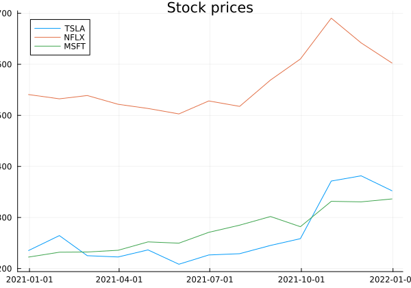
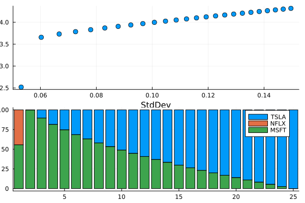
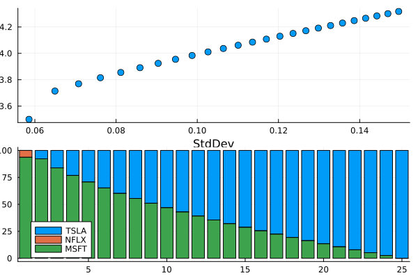
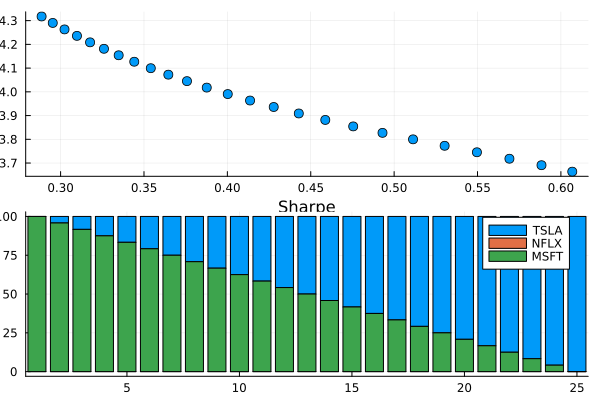
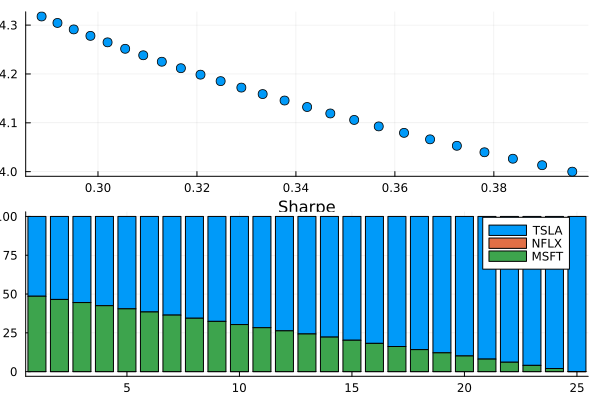

Tutorials
Except for the code examples and equations, this tutorial's content is generated by Microsoft Bing Chat and modified for clarity.
Throughout this tutorial, we will use the monthly stock prices of Tesla, Netflix, and Microsoft from Dec 2020 through Dec 2021.
using PortfolioAnalytics
using Dates
using TSFrames
dates = Date(2020, 12, 31):Month(1):Date(2021, 12, 31);
TSLA = [235.22,264.51,225.16,222.64,236.48,208.40,226.56,229.06,245.24,258.49,371.33,381.58,352.26];
NFLX = [540.73,532.39,538.85,521.66,513.47,502.81,528.21,517.57,569.19,610.34,690.31,641.90,602.44];
MSFT = [222.42,231.96,232.38,235.77,252.18,249.68,270.90,284.91,301.88,281.92,331.62,330.59,336.32];
prices_ts = TSFrame([TSLA NFLX MSFT], dates, colnames=[:TSLA, :NFLX, :MSFT])13×3 TSFrame with Date Index
Index TSLA NFLX MSFT
Date Float64 Float64 Float64
───────────────────────────────────────
2020-12-31 235.22 540.73 222.42
2021-01-31 264.51 532.39 231.96
2021-02-28 225.16 538.85 232.38
2021-03-31 222.64 521.66 235.77
2021-04-30 236.48 513.47 252.18
2021-05-31 208.4 502.81 249.68
2021-06-30 226.56 528.21 270.9
2021-07-31 229.06 517.57 284.91
2021-08-31 245.24 569.19 301.88
2021-09-30 258.49 610.34 281.92
2021-10-31 371.33 690.31 331.62
2021-11-30 381.58 641.9 330.59
2021-12-31 352.26 602.44 336.32weights = [0.4, 0.4, 0.2]3-element Vector{Float64}:
0.4
0.4
0.2plot(prices_ts, size = (600, 420))
title!("Stock prices")
xlabel!("Date")
ylabel!("Price")qt.qpa.xcb: could not connect to display
qt.qpa.plugin: Could not load the Qt platform plugin "xcb" in "" even though it was found.
This application failed to start because no Qt platform plugin could be initialized. Reinstalling the application may fix this problem.
Available platform plugins are: linuxfb, minimal, offscreen, vnc, xcb.
Aborted (core dumped)
connect: Connection refused
GKS: can't connect to GKS socket application
GKS: Open failed in routine OPEN_WS
GKS: GKS not in proper state. GKS must be either in the state WSOP or WSAC in routine ACTIVATE_WS
PortfolioAnalytics encourages you to "Know Your Data". Some functions may not work in presence of missing and NA values.
There is no dropmissing function for a TSFrame object. However, you can convert your data to DataFrame, drop missing values, and convert it back to a TSFrame object.
Investment Returns
An investment return is the change in value of an invested vehicle over time. It can be positive (profit) or negative (loss). The total return includes any additional payments such as dividends, coupon payments etc. and price change, while the nominal return only includes price change.
In this tutorial, we will use nominal return.
Simple return
\[Return = \frac{P_t}{P_{t-1}} - 1\]
returns = Return(prices_ts)12×3 TSFrame with Dates.Date Index
Index TSLA NFLX MSFT
Date Float64? Float64? Float64?
─────────────────────────────────────────────────
2021-01-31 0.124522 -0.0154236 0.0428918
2021-02-28 -0.148766 0.012134 0.00181066
2021-03-31 -0.011192 -0.0319013 0.0145882
2021-04-30 0.0621631 -0.0156999 0.0696017
2021-05-31 -0.118742 -0.0207607 -0.00991355
2021-06-30 0.0871401 0.0505161 0.0849888
2021-07-31 0.0110346 -0.0201435 0.0517165
2021-08-31 0.0706365 0.0997353 0.0595627
2021-09-30 0.0540287 0.0722957 -0.066119
2021-10-31 0.436535 0.131025 0.176291
2021-11-30 0.0276035 -0.0701279 -0.00310596
2021-12-31 -0.0768384 -0.0614737 0.0173326Log return
A log return is a way of calculating the rate of return on an investment using natural logarithms. It is sometimes preferred over simple percentage returns because it has advantages like infinite support and time-additivity. You can calculate the log return by specifying the method argument.
\[Return = LN\frac{P_t}{P_{t-1}}\]
Return(prices_ts, method = "log")12×3 TSFrame with Dates.Date Index
Index TSLA NFLX MSFT
Date Float64? Float64? Float64?
─────────────────────────────────────────────────
2021-01-31 0.117358 -0.0155438 0.0419975
2021-02-28 -0.161068 0.0120609 0.00180902
2021-03-31 -0.0112551 -0.0324212 0.0144828
2021-04-30 0.0603075 -0.0158244 0.0672864
2021-05-31 -0.126404 -0.0209792 -0.00996302
2021-06-30 0.0835505 0.0492816 0.0815697
2021-07-31 0.0109742 -0.0203492 0.0504236
2021-08-31 0.0682533 0.0950695 0.0578562
2021-09-30 0.0526197 0.0698019 -0.0684062
2021-10-31 0.362234 0.123125 0.162366
2021-11-30 0.0272294 -0.0727082 -0.0031108
2021-12-31 -0.079951 -0.0634445 0.0171842Portfolio Return
A portfolio return refers to how much an investment portfolio gains or loses in a given period. It depends on the expected return and weight of each holding in the portfolio and any dividends or fees involved.
To calculate your portfolio return, you need to know the returns and weights of each asset type. Then, you can use this formula:
\[R_{p, t=1} = W_{A1,t=1}*R_{A1,t=1} + W_{A2,t=1}*R_{A2,t=1} + W_{AN,t=1}*R_{AN,t=1}\]
\[R_{p, t=2} = W_{A1,t=2}*R_{A1,t=2} + W_{A2,t=2}*R_{A2,t=2} + W_{AN,t=2}*R_{AN,t=2}\]
\[R_{p, t=N} = W_{A1,t=N}*R_{A1,t=N} + W_{A2,t=N}*R_{A2,t=N} + W_{AN,t=N}*R_{AN,t=N}\]
Where:
- $R_{p, t}$ is the portfolio return at period
t. Ris the return of an asset at periods1,2and so on.Wis the weight of an asset in a portfolio at periods1,2and so on.
Note that portfolio_return( ) function assumes:
- the same weight for the holding period (
Wis the same att=1throught=N).
preturns = portfolio_return(prices_ts, weights)12×1 TSFrame with Dates.Date Index
Index PORT
Date Float64?
─────────────────────────
2021-01-31 0.0522176
2021-02-28 -0.0542905
2021-03-31 -0.0143197
2021-04-30 0.0325056
2021-05-31 -0.0577836
2021-06-30 0.0720602
2021-07-31 0.00669974
2021-08-31 0.0800613
2021-09-30 0.037306
2021-10-31 0.262282
2021-11-30 -0.017631
2021-12-31 -0.0518583Like the Return( ) function, you can choose the method of return calculation using the method argument.
portfolio_return(prices_ts, weights, method = "log")12×1 TSFrame with Dates.Date Index
Index PORT
Date Float64?
─────────────────────────
2021-01-31 0.0491251
2021-02-28 -0.0592409
2021-03-31 -0.014574
2021-04-30 0.0312505
2021-05-31 -0.060946
2021-06-30 0.0694468
2021-07-31 0.00633473
2021-08-31 0.0769004
2021-09-30 0.0352874
2021-10-31 0.226617
2021-11-30 -0.0188137
2021-12-31 -0.0539213It's possible to overwrite the default column name for the portfolio return column using the colname argument. To calculate the investment returns for a higher than one period, set a positive integer value for the period argument.
portfolio_return(prices_ts, weights, period = 3, method = "log", colname = "PRETURN")10×1 TSFrame with Dates.Date Index
Index PRETURN
Date Float64?
────────────────────────
2021-03-31 -0.0246898
2021-04-30 -0.0425644
2021-05-31 -0.0442695
2021-06-30 0.0397512
2021-07-31 0.0148355
2021-08-31 0.152682
2021-09-30 0.118522
2021-10-31 0.338805
2021-11-30 0.24309
2021-12-31 0.153882You can join TSFrame objects with the join( ) function from the TSFrames package.
all_returns = TSFrames.join(returns, preturns)12×4 TSFrame with Dates.Date Index
Index TSLA NFLX MSFT PORT
Date Float64? Float64? Float64? Float64?
──────────────────────────────────────────────────────────────
2021-01-31 0.124522 -0.0154236 0.0428918 0.0522176
2021-02-28 -0.148766 0.012134 0.00181066 -0.0542905
2021-03-31 -0.011192 -0.0319013 0.0145882 -0.0143197
2021-04-30 0.0621631 -0.0156999 0.0696017 0.0325056
2021-05-31 -0.118742 -0.0207607 -0.00991355 -0.0577836
2021-06-30 0.0871401 0.0505161 0.0849888 0.0720602
2021-07-31 0.0110346 -0.0201435 0.0517165 0.00669974
2021-08-31 0.0706365 0.0997353 0.0595627 0.0800613
2021-09-30 0.0540287 0.0722957 -0.066119 0.037306
2021-10-31 0.436535 0.131025 0.176291 0.262282
2021-11-30 0.0276035 -0.0701279 -0.00310596 -0.017631
2021-12-31 -0.0768384 -0.0614737 0.0173326 -0.0518583Average returns and risk
You can use the mean_return( ) function to calculate the average asset returns of some period.
\[\mu = \frac{1}{n} \sum_{i=1}^n x_i\]
mean_return(all_returns)4-element Named Vector{Float64}
μ │
─────┼──────────
TSLA │ 0.0431772
NFLX │ 0.010848
MSFT │ 0.0366371
PORT │ 0.0289375To calculate the geometric mean, set the geometric parameter to true.
mean_return(all_returns, geometric=true)4-element Named Vector{Float64}
μ │
─────┼───────────
TSLA │ 0.0342267
NFLX │ 0.00904634
MSFT │ 0.0350585
PORT │ 0.0257348To calculate the standard deviation of asset returns of some period, you can use the stddev( ) function.
\[\sigma = \sqrt{\frac{1}{n} \sum_{i=1}^n (x_i - \mu)^2}\]
stddev(all_returns)4-element Named Vector{Float64}
σ │
─────┼──────────
TSLA │ 0.149608
NFLX │ 0.0637211
MSFT │ 0.0603753
PORT │ 0.0879347Comparing returns and risk
Annualizing is converting a rate of return for a period other than one year into an equivalent annual rate. It helps to compare different investments with different time horizons. For example, if you invest $1000 in a stock that pays 5% interest every six months, your annualized return is (1+0.05)^2 - 1 = 10.25%. This means you would earn 10.25% interest on your investment if you held it for one year.
Annualizing risk measures is similar to annualizing returns but depends on the risk measure used. For example, the standard deviation is a common measure of volatility that can be annualized by multiplying it by the square root of the number of periods per year. However, some risk measures, such as Value at Risk (VaR) or Expected Shortfall (ES), cannot be annualized by simple multiplication because they depend on the distribution of returns.
Returns
- Annual return: total return earned over one calendar year.
- Annualized return: yearly rate of return inferred from any time period.
- Average return: total return realized over a longer period, spread evenly over the (shorter) periods.
- Cumulative (compounding) return: A return that includes the compounded results of reinvesting interest, dividends, and capital gains.
Annualizing returns
Annualizing a return means calculating the return if it was compounded over a year. We can annualize the returns by multiplying them by a time component depending on their frequency. For example, if you measure a monthly return, you can multiply it by 12 to get an annualized return. On the other hand, if you measure a quarterly return, you can multiply it by 4.
- From monthly returns: $ Return_{Ann} = Return*12$
- From daily returns: $ Return_{Ann} = Return*252$
Where:
- $Return$ is the
returnof an asset or portfolio we want to annualize.
As we use monthly returns in our example, we need to multiply them by 12 to annualize.
returns_annualized = mean_return(all_returns) .* 124-element Named Vector{Float64}
μ │
─────┼─────────
TSLA │ 0.518126
NFLX │ 0.130176
MSFT │ 0.439646
PORT │ 0.34725Annualizing standard deviation
- From std of monthly returns: $ Std_{Ann} = Std*\sqrt{12}$
- From std of daily returns: $ Std_{Ann} = Std*\sqrt{252}$
Where:
- $Std$ is the
standard deviationof returns of an asset or portfolio we want to annualize.
We can multiply the result of StdDev by $\sqrt{12}$ to annualize the standard deviation of monthly returns.
std_annualized = stddev(all_returns) .* sqrt(12)4-element Named Vector{Float64}
σ │
─────┼─────────
TSLA │ 0.518257
NFLX │ 0.220736
MSFT │ 0.209146
PORT │ 0.304615Moments
Moments are statistical measures that describe certain characteristics of a probability distribution. They are based on the expected values of powers of a random variable. For example, if X is a random variable, then its moments are defined as E(X), E(X²), E(X³), E(X⁴), etc.
The first moment is equal to the mean of X. The second moment is related to the variance of X. The third moment is associated with the skewness of X. Finally, the fourth moment is related to the kurtosis of X.
You can use the moments( ) function to calculate the statistical moments of asset returns of interest. Standard deviation is a more widely used risk metric than the variance in portfolio management; therefore moments( ) function uses standard deviation instead of variance.
Mean return is considered as expected return in many applications. It's the sum of a series of returns divided by the count of that series of returns.
\[\mu = \frac{\sum_{i=1}^n x_i}{n}\]
Standard deviation is a statistical measurement in finance that is widely used as an investment's historical volatility.
\[\sigma = \sqrt{\frac{\sum_{i=1}^n (x_i - \mu)^2}{n}}\]
Skewness measures how asymmetric or lopsided a distribution of returns is. Skewness is an important statistical concept because it helps us understand data sets that may not appear "normal." It tells us if returns have been extreme or not. Investors prefer positive skewness, which means more frequent positive returns than negative ones.
\[skewness = \frac{\sum_{i=1}^n (x_i - \mu)^3}{n . \sigma^3}\]
Kurtosis measures how peaked or flat the distribution of returns is. It tells you how often extreme returns occur. Investors generally consider high kurtosis a sign of higher risk because it means more frequent extreme returns (positive or negative) than normal. This is called kurtosis risk. When the excess kurtosis is around 0, or the kurtosis equals about 3, the tails' kurtosis level is similar to the normal distribution.
In the moments( ) function, kurtosis refers to excess kurtosis, which is kurtosis − 3.
\[kurtosis = \frac{\sum_{i=1}^n (x_i - \mu)^4}{n . \sigma^4}\]
moments(all_returns)4×4 Named Matrix{Float64}
Tickers ╲ Moments │ Mean Std Skewness Kurtosis
──────────────────┼───────────────────────────────────────────
TSLA │ 0.0431772 0.149608 1.36882 2.19682
NFLX │ 0.010848 0.0637211 0.604374 -0.808401
MSFT │ 0.0366371 0.0603753 0.681468 0.790701
PORT │ 0.0289375 0.0879347 1.53379 2.19321Sharpe Ratio
The Sharpe ratio is a way to measure how well an investment performs relative to its risk. It compares an investment's returns with a benchmark (such as a risk-free asset) and adjusts for its volatility. The higher the ratio, the better the investment in terms of risk-adjusted returns.
A positive Sharpe ratio means that the investment has outperformed the risk-free rate. Conversely, a negative Sharpe ratio indicates that the investment has underperformed the risk-free rate.
\[Sharpe \space\ Ratio = \frac{R_p \space\ – \space\ R_f}{\sigma_p}\]
Where; $R_p$ is a portfolio's average return over some period.
$\sigma_p$ is the standard deviation for the same period.
$R_f$ is the risk-free rate.
sharpe(all_returns)4-element Named Vector{Float64}
Sharpe Ratio (Rf=0) │
─────────────────────┼─────────
TSLA │ 0.288602
NFLX │ 0.170242
MSFT │ 0.606824
PORT │ 0.329079Based on Jan through Dec 2021, we'd obtain the best return by buying Microsoft stocks after adjusting for the risk.
Sharpe Ratios are equal to the effective return divided by the standard deviation. Similar to annualizing standard deviation, daily, weekly, or monthly Sharpe Ratios are annualized by multiplying by the square root of the higher frequency period.
sharpe_annualized = sharpe(all_returns) .* sqrt(12)4-element Named Vector{Float64}
Sharpe Ratio (Rf=0) │
─────────────────────┼─────────
TSLA │ 0.999747
NFLX │ 0.589734
MSFT │ 2.1021
PORT │ 1.13996Value at Risk
VaR is a statistical technique that gives the probability of losing more than a given amount that could happen in an investment portfolio over a specified period. It is usually expressed as a percentage or a dollar amount indicating how much money is at risk over a given period. For example, if an investment has a 5% VaR of $10 million for one day, there is a 5% chance that it will lose more than $10 million in one day.
There are different methods to calculate VaR, such as historical, variance-covariance, also known as parametric, and Monte Carlo.
In PortfolioAnalytics.jl, Value at Risk is calculated using the VaR( ) function. By default, it calculates the VaR of asset returns based on the historical simulation method at 95% and expresses it as a percentage.
Methods for using calculating VaR
1. Historical method
The historical simulation does not assume a particular distribution of asset returns. Instead, it involves taking market data for a certain period (e.g., 250 days) and calculating the percentage change over some period (e.g., daily). The VaR is then calculated as a percentile of these daily percentage changes (returns).
VaR(all_returns)4-element Named Vector{Float64}
95% historical VaR │
────────────────────┼───────────
TSLA │ -0.132252
NFLX │ -0.0653681
MSFT │ -0.035206
PORT │ -0.0558624The output tells us that there is a 5% chance that our portfolio (PORT) will lose more than 5.59% in a month.
We also can specify the confidence level.
VaR(all_returns, 0.90)4-element Named Vector{Float64}
90% historical VaR │
────────────────────┼────────────
TSLA │ -0.114551
NFLX │ -0.0585165
MSFT │ -0.00923279
PORT │ -0.05404732. Parametric VaR
Parametric VaR, also known as the variance-covariance method, is a method that uses two main inputs: the mean and standard deviation. It assumes that the assets (or portfolio)'s returns are normally distributed. The calculated standard deviation is used to derive a standard normal z score to size up the position with a confidence level (according to a pre-determined table).
To calculate the parametric VaR, we need to specify it using the method argument.
VaR(all_returns, method = "parametric")4-element Named Vector{Float64}
95% parametric VaR │
────────────────────┼───────────
TSLA │ -0.202906
NFLX │ -0.0939639
MSFT │ -0.0626713
PORT │ -0.1157023. Monte Carlo Method
The Monte Carlo method is a technique of numerical integration that can be used to estimate the value at risk (VaR). It simulates many possible scenarios by changing multiple variables and produces probability distributions of risk.
Expected Shortfall (CVaR)
Value-at-risk (VaR) is a risk measure that quantifies the maximum loss of a portfolio at a given confidence level and time horizon. For example, if a bank’s 10-day 99% VaR is 20%, there is considered to be only a 1% chance that losses will exceed 20% in 10 days.
Expected Shortfall (ES), also known as the Conditional Value at Risk (CVaR), is a risk measure that quantifies the average loss of a portfolio beyond the VaR level. For example, if the expected shortfall at a 99% confidence level is 30%, it means that the average loss of the portfolio is 30% when the loss is greater than or equal to 20% (VaR).
The main difference between VaR and ES is that VaR only considers losses up to a certain threshold, while ES considers losses beyond that threshold. This means that ES captures more information about the tail risk of a portfolio than VaR does. ES is also considered more coherent and subadditive than VaR, which satisfies some desirable properties for a risk measure.
es(all_returns)4-element Named Vector{Any}
95% historical ES │
───────────────────┼───────────
TSLA │ -0.148766
NFLX │ -0.0701279
MSFT │ -0.066119
PORT │ -0.0577836Similar to the VaR( ) function, we can specify the confidence level and method of the calculation in the es( ) function.
es(all_returns, 0.80, method = "parametric")4-element Named Vector{Any}
80% parametric ES │
───────────────────┼───────────
TSLA │ -0.133754
NFLX │ -0.0658008
MSFT │ -0.066119
PORT │ -0.0546442Portfolio Optimization
Portfolio optimization is selecting the best portfolio from a set of possible portfolios according to some objective. The objective usually involves maximizing expected return and minimizing risk.
Many portfolio optimization methods use different criteria and techniques to find the optimal portfolio. Some of the common methods are:
- Mean-variance (MV): This method uses expected return and variance as measures of reward and risk and tries to find the portfolio with the highest return for a given level of risk or the lowest risk for a given level of return.
- Sharpe Ratio: This method tries to find the portfolio with the highest return for a given level of Sharpe Ratio.
- Value-at-Risk (VaR): This method uses a probability threshold to measure risk and tries to find the portfolio with the highest return while keeping its loss below a certain level with a specified confidence level.
- Expected Shortfall: This method uses expected loss beyond VaR as a measure of risk and tries to find the portfolio with the highest return while minimizing its potential extreme loss.
The portfolio_optimize( ) function is used to find the optimal weights of a portfolio for a chosen objective and target return. The set of optimal portfolios forms a curve called the efficient frontier.
At the moment it is possible to find mean-variance and maximum-sharpe portfolios. Optimization using Value at Risk (VaR) and Expected Shortfall (ES) will be implemented as part of the next releases.
Risk of a portfolio
- Investing is risky: individual assets will go up or down
- Expected return is a random variable
- Returns spread around the mean are measured by the variance σ and is a common measure of volatility
- Variance of an individual asset varies: some have more or less spread around the mean
- Variance of the portfolio is not simply weighted variances of the underlying assets
- Because returns of assets are correlated, it becomes complex
- The correlation between asset 1 and asset 2 is denoted by $P_{1,2}$ and tells us to which extend assets move together
- The portfolio variance takes into account the individual assets' variance $(σ_{1}^2,σ_{2}^2,etc.)$, the weights of the assets in portfolio $(w_{1}, w_{2})$, as well as their correlation to each other
Calculating two-asset portfolio variance
\[\sigma_{p}^2 = w_{1}^2σ_{1}^2 + w_{2}^2σ_{2}^2 + 2w_{1}w_{2}p_{1,2}σ_{1}σ_{2}\]
- $p_{1,2}σ_{1}σ_{2}$ is called the covariance between asset 1 and 2
- The covariance can also be written as $σ_{1,2}$
- The equation then becomes:
\[\sigma_{p}^2 = w_{1}^2σ_{1}^2 + w_{2}^2σ_{2}^2 + 2w_{1}w_{2}σ_{1,2}\]
- This can be re-written in matrix notation, which we can generalize the concept
Two-asset portfolio variance matrix-form
\[\sigma_{p}^2 = \begin{bmatrix} w_{1} & w_{2} \end{bmatrix} \begin{bmatrix} σ_{1}^2 & σ_{1,2} \\ σ_{2,1} & σ_{2}^2 \end{bmatrix}\begin{bmatrix} w_{1} \\ w_{2} \end{bmatrix}\]
Step-by-step matrix multiplications for two-asset portfolio variance
\[\sigma_{p}^2 = \begin{bmatrix} w_{1} * σ_{1}^2 + w_{2} * σ_{2,1} & w_{1} * σ_{1,2} + w_{2}* σ_{2}^2\end{bmatrix} \begin{bmatrix} w_{1} \\ w_{2} \end{bmatrix}\]
\[\sigma_{p}^2 = (w_{1} * σ_{1}^2 + w_{2} * σ_{2,1}) * w_{1} + (w_{1} * σ_{1,2} + w_{2}* σ_{2}^2) * w_{2}\]
where $σ_{1,2} = σ_{2,1}$
\[\sigma_{p}^2 = w_{1}^2σ_{1}^2 + w_{2}^2σ_{2}^2 + 2w_{1}w_{2}σ_{1,2}\]
So, it can be extended to any number of assets in the below form:
\[Portfolio \space\ variance = w' * Q * w\]
Where;
- $w$ is the assets' weights in a portfolio
- $w'$ is the transpose of $w$
- $Q$ is the covariance matrix
1. Mean-Variance
Modern portfolio theory (MPT) states that portfolio variance can be reduced by selecting securities with low or negative correlations in which to invest, such as stocks and bonds.
Mean-variance optimization is a quantitative tool that allows you to allocate your portfolio by considering the trade-off between risk and return. It is based on modern portfolio theory (MPT), a mathematical framework for assembling a portfolio of assets that maximizes expected return for a given level of risk. The optimal portfolio is found by minimizing the variance (or standard deviation) of the portfolio returns for a given expected return or maximizing the expected return for a given variance.
Portfolio expected return:
\[μ_{p} = \begin{bmatrix} w_{1} & w_{2} \end{bmatrix} \begin{bmatrix} μ_{1} \\ μ_{2} \end{bmatrix}\]
Where;
- $μ_{1}$ and $μ_{2}$ are the average returns for assets 1 and 2, respctively
- $w_{1}$ and $w_{2}$ are the weights of assets 1 and 2 in a portfolio, respectively.
Portfolio standard deviation:
\[\sigma_{p} = \sqrt{\sigma_{p}^2}\]
Note that we are solving the problem under the following assumptions:
- We are fully invested. The sum of weights is 1.
- We can trade any continuum of shares.
- No short-selling is allowed.
- There are no transaction costs.
opt = portfolio_optimize(returns)
opt.pltqt.qpa.xcb: could not connect to display
qt.qpa.plugin: Could not load the Qt platform plugin "xcb" in "" even though it was found.
This application failed to start because no Qt platform plugin could be initialized. Reinstalling the application may fix this problem.
Available platform plugins are: linuxfb, minimal, offscreen, vnc, xcb.
Aborted (core dumped)
connect: Connection refused
GKS: can't connect to GKS socket application
GKS: Open failed in routine OPEN_WS
GKS: GKS not in proper state. GKS must be either in the state WSOP or WSAC in routine ACTIVATE_WS
Expected return for the minumum variance portfolio.
opt.preturn0.0252Standard deviation, risk, for the mimumum variance portfolio.
opt.prisk0.0531Optimal weights for the mimnumum variance portfolio.
opt.pweights3-element Named Vector{Float64}
Optimal Weights │
─────────────────┼───────
TSLA │ -0.0
NFLX │ 0.4438
MSFT │ 0.5562So if we have $1000 and buy $440 (44%) Netflix shares and $560 (56%) Microsoft shares, we expect, on average, $25 (2.5%) monthly return and our portfolio to fluctuate $53 (5.3%). $25 (2.5%) monthly expected return is a good deal for a minimum-variance portfolio, but the data we work with in this tutorial is only from Jan 2021 through Dec 2021. It is one of the good years for the stock market. Be careful about the data you use when making investment decisions!
Investors do not always want to choose a portfolio with the lowest risk. Instead, they may want to accept a higher risk for a higher return. The best way to achieve this is to define a target return by setting a value to the target parameter in the portfolio_optimize( ) function. It will automatically eliminate the portfolios with lower-than-defined target returns.
For example, we want optimal portfolios with monthly expected returns higher than 3.5%.
opt = portfolio_optimize(returns, target = 0.035)
opt.pltqt.qpa.xcb: could not connect to display
qt.qpa.plugin: Could not load the Qt platform plugin "xcb" in "" even though it was found.
This application failed to start because no Qt platform plugin could be initialized. Reinstalling the application may fix this problem.
Available platform plugins are: linuxfb, minimal, offscreen, vnc, xcb.
Aborted (core dumped)
connect: Connection refused
GKS: can't connect to GKS socket application
GKS: Open failed in routine OPEN_WS
GKS: GKS not in proper state. GKS must be either in the state WSOP or WSAC in routine ACTIVATE_WS
2. Sharpe Ratio
Portfolio optimization with the Sharpe ratio is a method of finding an optimal portfolio with the highest excess return per unit of risk. The optimal portfolio is found by maximizing the expected return for a given Sharpe ratio.
Portfolio expected return:
\[μ_{p} = \begin{bmatrix} w_{1} & w_{2} \end{bmatrix} \begin{bmatrix} μ_{1} \\ μ_{2} \end{bmatrix}\]
Where;
- $μ_{1}$ and $μ_{2}$ are the average returns for assets 1 and 2, respectively
- $w_{1}$ and $w_{2}$ are the weights of assets 1 and 2 in a portfolio, respectively.
Portfolio Sharpe Ratio:
\[Sharpe \space\ Ratio_{p} = \frac{μ_{p} - rf}{σ_{p}}\]
Where;
- $μ_{p}$ is the portfolio expected return
- $rf$ is the risk-free rate
- $σ_{p}$ is the portfolio standard deviation
Let's optimize the portfolio and plot the efficient frontier, a set of optimal portfolios that offer the highest expected return for a given level of Sharpe Ratio.
opt2 = portfolio_optimize(returns, "maximum sharpe")
opt2.pltqt.qpa.xcb: could not connect to display
qt.qpa.plugin: Could not load the Qt platform plugin "xcb" in "" even though it was found.
This application failed to start because no Qt platform plugin could be initialized. Reinstalling the application may fix this problem.
Available platform plugins are: linuxfb, minimal, offscreen, vnc, xcb.
Aborted (core dumped)
connect: Connection refused
GKS: can't connect to GKS socket application
GKS: Open failed in routine OPEN_WS
GKS: GKS not in proper state. GKS must be either in the state WSOP or WSAC in routine ACTIVATE_WS
Similar to mean-variance portfolios, we may consider portfolios with higher returns. Let's define a monthly target return of 4% and plot the efficient frontier.
opt2 = portfolio_optimize(returns, "maximum sharpe", target = 0.04)
opt2.pltqt.qpa.xcb: could not connect to display
qt.qpa.plugin: Could not load the Qt platform plugin "xcb" in "" even though it was found.
This application failed to start because no Qt platform plugin could be initialized. Reinstalling the application may fix this problem.
Available platform plugins are: linuxfb, minimal, offscreen, vnc, xcb.
Aborted (core dumped)
connect: Connection refused
GKS: can't connect to GKS socket application
GKS: Open failed in routine OPEN_WS
GKS: GKS not in proper state. GKS must be either in the state WSOP or WSAC in routine ACTIVATE_WS
It's possible to extract the risk, defined as standard deviation, Sharpe ratio, and weights of each optimal portfolio in efficient frontier. This is particularly useful if you would like to make custom plots.
List of expected returns per portfolio.
opt2.pm25-element Vector{Float64}:
0.03999999009858564
0.04013236145932192
0.04026473282761976
0.040397104202791266
0.04052947557908179
0.04066184695704224
0.04079421833684587
0.04092658971853995
0.04105896110216654
0.041191332487754896
⋮
0.04211793223996188
0.042250303638013964
0.04238267505204821
0.042515046471296336
0.04264741789728775
0.04277978933304631
0.04291216078607087
0.04304453228603106
0.043176903709005406List of objective values per portfolio. If the objective is minimum-variance, then standard deviations of each optimal portfolio. If the objective is set to the maximum-sharpe, then the Sharpe Ratios of each portfolio.
opt2.po25-element Vector{Float64}:
0.39584775653806653
0.389759033366154
0.3838457890331248
0.3781031275938834
0.37252608056932995
0.3671096510597303
0.36184885056582855
0.3567387289222714
0.3517743985197051
0.3469510536755197
⋮
0.31675438931213445
0.31289942679533606
0.30914748372585726
0.3054949931343078
0.3019385156391233
0.29847473813713987
0.29510047050558724
0.2918126416260734
0.28860830449932734List of weights corresponding to each portfolio on the efficient frontier.
opt2.pw25-element Vector{Vector{Float64}}:
[0.5141960534485567, -8.222496419315698e-9, 0.4858039547739397]
[0.5344362521051751, -8.189595953560717e-9, 0.4655637560844209]
[0.5546764519851748, -8.139658550126348e-9, 0.4453235561544837]
[0.5749166529077911, -8.091850507002002e-9, 0.4250833551840593]
[0.5951568540082792, -8.042326247082454e-9, 0.4048431540340471]
[0.615397055371497, -7.990927799972414e-9, 0.3846029526194307]
[0.6356372570201781, -7.938607899606727e-9, 0.36436275091842985]
[0.6558774589663102, -7.884159952356611e-9, 0.34412254891784977]
[0.6761176612128089, -7.828475254060132e-9, 0.32388234661566634]
[0.6963578637635169, -7.771713883910157e-9, 0.30364214400819695]
⋮
[0.8380392896181337, -7.404261415541048e-9, 0.16196071778612775]
[0.8582794938794782, -7.3969829682098885e-9, 0.14172051351750464]
[0.8785197022219837, -6.974463190935102e-9, 0.12148030475247946]
[0.8987599102640739, -6.830300746512469e-9, 0.1012400965662269]
[0.9190001195017873, -6.644411156878468e-9, 0.08099988714262388]
[0.9392403305584048, -6.3759853052271336e-9, 0.06075967581758048]
[0.9594805450629246, -5.902692529263711e-9, 0.040519460839768054]
[0.9797207699660809, -4.612323631476875e-9, 0.02027923464624259]
[0.9999609694113909, -6.7927567757340564e-9, 3.903738136598841e-5]